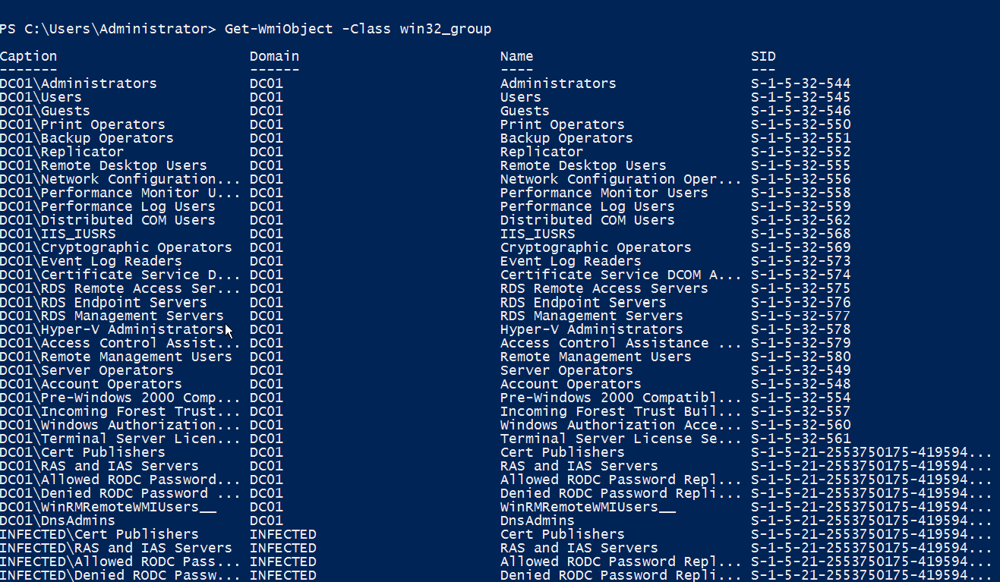
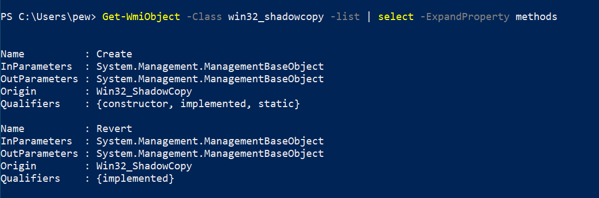

8 minutes
Offensive WMI - Reconnaissance & Enumeration (Part 4)

This is the fourth part of the “Offensive WMI” series which will focus a bit more on information gathering and enumeration. WMI provides a plethora of classes from which we can enumerate a lot of stuff. So let’s dive in without wasting any more time.
Gathering basic information
In our previous blogs, we have already seen a lot of classes that provide us with valuable information about a system, e.g. StdRegProv for the registry, Win32_Process for processes running on the system, Win32_Bios for BIOS information etc. Let us try exploring a bit more.
Host/OS info
Getting to know the host/OS is a very basic step when it comes to reconnaissance. WMI has two classes, namely Win32_OperatingSystem and Win32_ComputerSystem that provides us with the relevant information. For our example, we’ll be filtering out junk to print only the necessary information needed.
Get-WmiObject -Class win32_computersystem -Property bootupstate,username,totalphysicalmemory,systemtype,systemfamily,domain,dnshostname,oemstringarray
So most of the information that we have now helps us in one major thing – figuring out whether we are in an emulated environment. The bootup state for our current run indicates that the system wasn’t booted in fail-safe mode. We can also see that our current user is pew and the box is not a part of any AD domain. We also get the processor architecture and the RAM available for us to use. This is useful for VM detection, for example – if the number of logical processors is less than 4 and the RAM available is below 2 Gigs, then the probability of the box being a VM is high. Of course, the same data is given away by the SystemFamily and the OEMStringArray properties, but in controlled environments, there might be other indicators as well.
The other class Win32_OperatingSystem too provides us with a lot of useful info:
Get-WmiObject -Class win32_operatingsystem | fl *
Directory listing
Listing files on a system is a very fundamental operation. WMI has a class called Win32_Directory that helps in listing the files. Alternatively, there is another class named CIM_DataFile that can also be utilized to achieve the same.
Get-WmiObject -Class win32_directory
Often searching for file patterns using wildcards is helpful. We can make use of the -Filter argument of the cmdlet to achieve something similar. Let’s say we’re interested in directory paths that have a folder called snapshots. Querying it with WMI would look like this:
Get-WmiObject -Class win32_directory -Filter 'name LIKE "%snapshots%"'
AV product
One of the first steps when it comes to recon is to enumerate what kind of product is providing security to a system. WMI provides a class called AntiVirusProduct under the root\SecurityCenter2 namespace that contains information about the AV installed on the system. In my case, it’s the default Windows Defender.
Get-WmiObject -Namespace root\securitycenter2 -Class antivirusproduct
Services
Services on a Windows system are similar to Unix daemons, or simply non-UI processes running in the background. This is useful information when it comes to privilege escalation, especially, in cases where there is a service created by SYSTEM with weak file permissions.
To list the services, we need to make use of the Win32_Service class. For our example, we’ll only print those services which are initiated by the LocalSystem (or the NT Authority\System). Note the usage of the select Powershell utility that expands the output significantly as compared to without it.
Get-WmiObject -Class win32_service -Filter 'startname="localsystem"' | select *
WMI also provides several methods when it comes to interacting with services. They allow creation, deletion, starting, stopping, resuming, updating and a lot of other capabilities to manipulate the services. To list the methods available under the Win32_Service class, we can use the following command:
Get-WmiObject -Class win32_service -List | select -ExpandProperty methods
Logged-on Users
Getting the logged-on users on a system is pretty trivial. There are two classes – Win32_LoggedOnUser and Win32_LogOnSession that holds the particulars about the session and users logged onto the system. Querying the class from a privileged user gives us much more information about the logged in users:
Get-WmiObject -Class win32_loggedonuser
From the above, we can see that each logged-in user has an LUID (locally-unique identifier). Some LUIDs are predefined. For example, the LUID for the System account’s logon session is always 0x3e7 (999 decimal), the LUID for Network Service’s session is 0x3e4 (996), and Local Service’s is 0x3e5 (997). Most other LUIDs are randomly generated.
Each logged-on user defines its dependents via the Dependent property. We can get a list of logon IDs, the authentication type, start time and scope of every session using the Win32_LogOnSession class:
Get-WmiObject -Class win32_logonsession | select authenticationpackage,logonid,starttime,scope
Installed patches
It’s often useful to enumerate the updates/patches installed on a machine. If the system is missing important patches, that might open up an easy possibility to compromise the system in one quick shot. WMI has a class known as Win32_QuickFixEngineering which contains info about the installed updates and security patches. Querying the class is a piece of cake:
Get-WmiObject -Class win32_quickfixengineering
Event logs
The class Win32_NtLogEvent gives us useful data about the events logs captured by the system. We can query it like the following:
Get-WmiObject -Class win32_ntlogevent
Each log entry carries details like time, the source generating the event, severity and a message. The severity is indicated by the Type property in the output. Talking about event types, there are five different levels which are depicted in the table below:
| Value | Meaning |
|---|---|
| 1 | Error |
| 2 | Warning |
| 4 | Information |
| 8 | Security Audit Success |
| 16 | Security Audit Failure |
We can, of course, make use of the -Filter switch to search for specific event types.
Shares
The Win32_Share class represents a shared resource on a system. This may be a disk drive, printer, interprocess communication, or other sharable devices. In enterprise networks, there are usually a lot of shares that might come in handy during a penetration test. Let us see how we can enumerate the available shares:
Get-WmiObject -Class win32_share | select type,name,allowmaximum,description,scope
In the above example, we filtered only the required useful information using select. We have the share type, name, concurrent access permission, description and scope of every available share from the output of the command. Once again, types are constants that define the type of resources being shared:
| Value | Meaning |
|---|---|
| 0 | Disk Drive |
| 1 | Print Queue |
| 2 | Device |
| 3 | IPC |
| 2147483648 | Disk Drive Admin |
| 2147483649 | Print Queue Admin |
| 2147483650 | Device Admin |
| 2147483651 | IPC Admin |
The AllowMaximum is a boolean property indicating whether concurrent access to the resource has been restricted or not. If the value is set to True, then there is no restriction on the shared access, which otherwise might indicate that there is something sensitive in the resource, or better might have monitoring for clients accessing the share.
WMI also provides methods like Create, SetShareInfo and Delete for creating, updating and deleting shares.
Network info
Network information is provided by the Win32_IP4RouteTable class. This gives us details similar to the ipconfig command but in a much more detailed fashion.
Get-WmiObject -Class win32_ip4routetable
I would like to mention another useful class called Win32_NetworkAdapter while talking about network stuff. Querying it can give us a useful indication about the network hardware that the system has. This in-turn is useful for VM detection, for example, we can run the following queries to identify whether the system is virtualized by VMWare:
Get-WmiObject -Class Win32_NetworkAdapter -Filter 'name like "%vmware%"'
Get-WmiObject -Class Win32_NetworkAdapter -Filter 'manufacturer like "%vmware%"'
User accounts
User account information is provided by the Win32_UserAccount class. For a default local system, there are only a few accounts, the most common ones being the administrator, guest, local users and the windows defender (WDAGUtilityAccount). We can get a list of users quickly via:
Get-WmiObject -Class win32_useraccount
However, for a domain-joined box or domain controller, there will be several others including krbtgt, sqladmin, webadmin, etc. For a default Windows Server 2012 setup, there are just 3 accounts as displayed below.
User groups
Similar to user accounts, user groups information is provided by the Win32_Group class. Querying the class on a local box is easy:
Get-WmiObject -Class win32_group
If the same command is run in an enterprise environment, e.g. a domain-joined network, the number of groups would increase giving us a wider view of the user groups present on a network. This will include the local ones, the current domain, the trusted domain and the trusted forest as well:
System secrets
System secrets are once again useful info to enumerate when it comes to recon. If we have enough privileges on the system, we can create shadow copies of the disk and try to extract secrets from there. But before that for those of you not familiar with shadow copies:
Shadow Copy is a technology included in Microsoft Windows that can create backup copies or snapshots of computer files or volumes, even when they are in use.
To interact with the shadow copies, we have 2 available methods as seen in the picture below:
Creating a quick shadow copy is easy, we just need to specify the volume and the context of the copy creation:
(Get-WmiObject -Class win32_shadowcopy -List).create("C:\", "ClientAccessible")
To add to this, we can create a symlink to easily access the shadow copy from our local explorer:
$link = (Get-WmiObject -Class win32_shadowcopy).deviceobject + "/"
cmd /c mklink /d C:\shadowcopy "$link"
Once we have the shadow copy ready to use, we can simply run tools like Invoke-SessionGopher.ps1 with the -Thorough switch to search for secrets on the filesystem. This would yield saved session information for PuTTY, WinSCP, FileZilla, SuperPuTTY, RDP, etc. In my case, I found a few saved RDP sessions and PuTTY sessions using the script.
Conclusion
So this was all about information gathering over WMI for a single blog post. We saw how we can gather so much useful data in just a few key taps so conveniently. Of course, the information presented above is not exhaustive and there are endless possibilities to consider when it comes to reconnaissance.
That’s it for now folks and I’ll meet you in our next blog that will focus on Active Directory enumeration via WMI. Sláinte! 🥂
1671 Words
2021-10-02 00:00